Tutorial: Post-processing of data from DIFAR sonobuoys with the PAMGuard DIFAR module
Brian S. Miller
Australian Marine Mammal Centre, Australian Antarctic Division
Purpose of this tutorial
The purpose of this tutorial is to provide step-by-step instructions for configuring and running the PAMGuard DIFAR module in order to post-process data that have been collected from DIFAR sonobuoys. This document is not intended as a guide for real-time analysis of DIFAR data, however there is considerable overlap between these two use cases. The tutorial includes step-by-step instructions for importing voyage tracks (i.e. GPS data) into PAMGuard, importing sonobuoy deployment locations into PAMGuard, configuring PAMGuard for DIFAR Localisation, and configuration of PAMGuard’s automated Whistle and Moan Detector for use with the DIFAR Localisation module. Post-processing of DIFAR data should yield a list of magnetic and possibly true bearings to sound sources in the DIFAR data. The list of bearings can be stored in PAMGuard binary storage files and/or the PAMGuard database.
Version 1.0 2014-08-20
Contents
Installation of PAMGuard DIFAR module
Custom install of the PAMGuard DIFAR jarfile
OPTIONAL: Installation of the Greeneridge Sciences Demultiplexing Software
A technical note on demultiplexers
Preparation and Import of Data and Metadata
Hydrophone array configuration
Example: single sonobuoy deployment
Example: Recordings with two sonobuoys
Sonobuoy deployments – Import Streamer Data
Configuration of DIFAR Localisation
Low frequency decimator (for blue/fin whale calls)
Low frequency spectrogram (for blue/fin whale calls)
Full bandwidth spectrogram (for DIFAR diagnostics)
Preparation and expectations
The instructions in this tutorial follow the assumption that the user already has a working installation of PAMGuard Beta version and that the user has basic familiarity with running PAMGuard. At the time of writing, the latest version of PAMGuard Beta is 1.12.05 which can be downloaded via the PAMGuard website. Tutorials for installation and general operation of PAMGuard are available on the PAMGuard website, and the PAMGuard online help system. The PAMGuard DIFAR module was developed and has only been tested on 64-bit Windows 7 with PAMGuard running uder a 32-bit version of the Java 7 runtime. Familiarity with acoustic detection, localisation, and DIFAR usage will be helpful, but is not required.
Disclaimer
Please keep in mind that the PAMGuard DIFAR module is still beta software and it may break in unexpected ways. Standard disclaimers apply: the software is available without warranty, as is where is; backup your data; don't expect too much; I'm not to be held responsible if it eats your homework, frightens your pets, melts polar icecaps, etc.
Installation of PAMGuard DIFAR module
Installation of the PAMGuard DIFAR Module follows the general procedure for the installation of custom JARFILES. This installation procedure has been in practice for a number of years, and is the semi-official means for installing versions of PAMGuard with custom features outside of the mainstream releases. At the time of writing this procedure is detailed on the System Requirements page of the PAMGuard Website. A version of these instructions tailored to the DIFAR module is included below.
Custom install of the PAMGuard DIFAR jarfile
Download the latest PAMGuard DIFAR .jar and .ini files from the Australian Antarctic Division FTP server: ftp://ftp.aad.gov.au/Public/BrianMiller/PAMGuardDifar/
In addition to the jar file you will also need other shared libraries. (E.g. the appropriate rxtx serial library will needed in order to acquire gps data). These shared libraries can be downloaded from the lib folder on the FTP server.
After downloading, the .jar and .ini files and the lib folder must be copied, overwriting existing files, into an existing installation of PAMGuardBeta. If a default installation of PAMGuardBeta on windows is being used then this would mean copying the custom .jar, and .ini files and lib folder into C:\Program Files (x86)\PAMGuardBeta\.
The custom version of PAMGuard with the DIFAR module can then be launched via the usual shortcuts for PAMGuard in the start menu/desktop, or alternatively with an appropriate command line, probably along the lines of:
java -Djava.library.path=/your_shared_library_folder -Xms384m -Xmx1024m -jar PAMGuardDifar_YYYY-MM-DD.jar
where:
· /your_shared_library_folder specifies the folder in which the JVM should look for shared libraries
· -Xms and –Xmx specifies the initial and maximum memory to be reserved for PAMGuard
· PAMGuardDifar_YYYY-MM-DD.jar specifies the runnable jarfile containing release e.g. 2014-08-04 of the PAMGuard DIFAR module.
Once you have command line that successfully launches PAMGuard on your system then there is always the option of incorporating the command line into a suitable shell script or batch file.
OPTIONAL: Installation of the Greeneridge Sciences Demultiplexing Software
Analysis of DIFAR data requires demultiplexing (i.e. demodulation) software in order to correctly extract the signals from the directional hydrophones that are included in VHF transmissions of DIFAR sonobuoys. The PAMGuard DIFAR module was initially developed and tested with commercially available demultiplexing software licensed from Greeneridge Sciences Inc. The Greeneridge Sciences demultiplexing software is not included by default in the PAMGuard DIFAR module. Those wishing to use the Greeneridge Sciences demultiplexer must obtain the software directly from Greeneridge Sciences Inc. Installation of the Greeneridge Sciences demultiplexer only requires placing the file GreeneridgeDemux32.dll into the lib folder as described above. Installation of the Greeneridge Demultiplexing Software is optional, but recommended.
A technical note on demultiplexers
The PAMGuard DIFAR module includes open-source demultiplexing software created at the Australian Marine Mammal Centre (AMMC). The implementation of this demultiplexing software is fundamentally different than that of Greenridge Sciences Inc. It has worked well in the limited testing that has been conducted, and it appears to give similar results to those from the Greenridge Sciencies demultiplexer.
To the best of my knowledge, the Greenridge Sciences demultiplexing library used by PAMGuard is based on algorthims and computer-code that has been used successfully over the past 10 years (at the very least) to analyse DIFAR data. Thus, it is recommended over the AMMC demultiplexer, which should work, but has not yet seen extensive use.
Verifying installation
To verify that the PAMGuard DIFAR module is installed, run PAMGuard using either the shortcut from the start menu or command-line, and create a new blank settings (.psf) file. If installed correctly, the module should be available from the PAMGuard Menu under File -> Add Modules ... -> Localisers -> DIFAR Localisation, and there should be a corresponding entry under PAMGuard’s online help system under Help -> Help. Since you have now gone to the trouble of opening the DIFAR Help, it might be a good time to take a few minutes to read through the PAMGuard’s help files in order to better familiarise yourself with general operation of the DIFAR module. NB: the online help for the DIFAR module is geared towards real-time operation, rather than the aim of this tutorial: post-processing.

Import of Data and Metadata
Overview
The general process for post-processing DIFAR recordings is somewhat more convoluted than real-time acquisition, as data must be imported in Viewer mode, but analysed in Mixed-mode. It is assumed that the user has recordings from one or more DIFAR sonobuoys, recorded at a level and sample rate suitable for recovering the directional signals (e.g. the audio was not clipped during recording and the sample rate is at least 48 kHz). The purpose of post-processing such data is to obtain magnetic and/or true bearings to sound sources audible within these recordings.
The general procedure for post-processing data is to first configure the hydrophone array, then import the sonobuoy deployments as streamers in VIEWER mode. Ships tracks, if available can also be imported into Viewer mode. After import of sonobuoy deployments and ships tracks the DIFAR module and required sound-processing must be configured, and this can be done either in Viewer or Mixed-mode. Finally, acoustic data can be post-processed to obtain DIFAR bearings by running PAMGuard in Mixed-mode.
At this point it is wise to make a backup copy of your data/ existing PAMGuard databases before any post-processing, since post-processing may alter tables, rows, and columns of the PAMGuard database.
Database preparation
Post-processing of DIFAR data requires a database module. All development and testing of the DIFAR module were conducted using the MS Access database module. NB: I have found that the older .mdb Access databases seem to work more reliably than the newer format .accdb database files, especially on computers where MS Access is not installed.
If a PAMGuard database has already been created for this dataset (e.g. PAMGuard was used initially when collecting the data), this database can be used in lieu of importing GPS and streamer data into a blank database. However, the more likely scenario is that there is no PAMGuard database, so one must be created. An easy way to create a new database is to simply create a copy of a blank database (e.g. the one distributed with this tutorial).
copy blank.mdb difarTutorial.mdb
With the blank database created, run PAMGuard in Viewer-mode, and select difarTutorial.mdb as the database.

Hydrophone array configuration
Before importing any GPS or sonobuoy deployment data, the hydrophone array must be configured using PAMGuard’s Array Manager, either in Normal, Mixed, or Viewer-Mode.
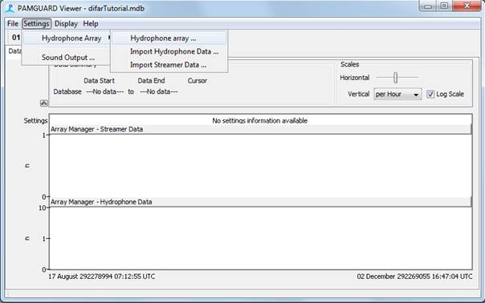
Presently, it is up to the user to correctly configure the streamers, hydrophones, and channel mappings within the Array Manager in a way that is sensible for DIFAR post-processing. Thus, some explanation of how the DIFAR module maps sonobuoy deployments to Hydrophone Elements and Hydrophone Streamers within the Array Manager is required. The total number of streamers and elements defined in the Array Manager must be equal to or greater than the total number of simultaneously recorded sonobuoys in the dataset. The DIFAR module assumes that each physical DIFAR sonobuoy that is deployed will have a single hydrophone element, and thus correspond to a single audio channel. In short, a one-to-one-to-one relationship is expected between the audio channel:hydrophone element:streamer.
Example: single sonobuoy deployment
For a single sonobuoy deployment there will be one audio channel, and thus only one streamer and element is required. Configure that hydrophone element (i.e. id# 0) as follows:
Streamer: Streamer 0
Hydrophone type: DIFAR
Hydrophone sensitivity: -122
Interpolation: Use the location for the time preceeding each data unit
The other fields are not required, however if it is useful for your own purposes you can enter the deployment depth of the sonobuoy as the depth coordinate. The screenshot below shows a correctly configured hydrophone.

NB: Assuming that the gain on the Analog-to-Digital Converter has been correctly set in PAMGuard, a value of -122 dB for the hydrophone sensitivity will get the spectrogram in the right ballpark of actual received levels, at least for DIFAR 53D sonobuoys received on a WinRadio G39 receivers and that have a roughly flat frequency response of 1 V audio output at 25 kHz frequency deviation. ICOM receivers (which have been commonly used on several past surveys) will have a different frequency response. The received levels won't take into account the pre-whitening filter built in each sonobuoy (i.e highpass filter from 10-100 Hz, and from 100-1000 Hz, so received levels under 100 Hz will be displayed as lower than they really are, and received levels for signals over 100 Hz will display higher, and 100 Hz will be just about right.
Next configure the streamer for this hydrophone by clicking on Streamer 0, and then clicking the edit button below. Most of the details for the streamer are not important at this point, as they will be overwritten in the next step when we Import the sonobuoy deployments. However, I have always set the following at this point:
Reference Position: Fixed location (moorings and buoys)
Hydrophone Locator Method to: Straight / Rigid Streamer
Interpolation: Use the location for the time preceeding each data unit

If you have multiple datasets, or are planning on re-analysing data more than once, then you might want to Export the array to save yourself from having to follow the above steps for each data set. Click the Export button and name the array SingleSonobuoyArray.paf. Then the next time that you post-process the data, you can simply import SingleSonobuoyArray.paf instead of manually configuring the array by following the above steps.
If your data set only ever contains one-channel audio (i.e. recordings from only one sonobuoy at a time), then you can continue onto the section on Importing sonobuoy deployments as streamers. Otherwise continue with the example below.
Example: Recordings with two sonobuoys
If your data contain simultaneous recordings from two sonobuoys (i.e. two channel audio), then add another streamer and another hydrophone and repeat the configuration steps for each of these as per the single-sonobuoy example above. When configuring hydrophone id: 1 be sure to assign it to Streamer 1 in order to maintain a 1:1:1 mapping between channels, hydrophones, and streamers.
If you have multiple datasets, or are planning on re-analysing data more than once, then you might want to Export the array to save yourself from having to follow the above steps for each data set. Click the Export button and name the array TwoSonobuoyArray.paf. Then the next time that you post-process the data, you can simply import TwoSonobuoyArray.paf instead of manually configuring the array by following the above steps. The screenshot below shows a properly configured two-sonobuoy array.

Sonobuoy deployments – Import Streamer Data
In order to plot the correct location of sonobuoys and DIFAR bearings on the PAMGuard map, one must first input the deployment time and location of each sonobuoy. This is achieved via Settings -> Hydrophone Array -> Import Streamer Data ...
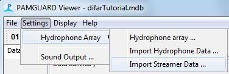
The trick to post-processing DIFAR data is to first import the sonobuoy deployments as streamers in VIEWER mode. Streamers can be imported as a CSV file. The CSV file should NOT have a header, as the CSV import can only cope with numbers (even for the StreamerName). The format for each row in the CSV file should be:
Where:
· StreamerIndex must be equal to an existing streamer ID (i.e. one that has already been added to the Array Manager; e.g. 0 for a single sonobuoy array, 0, or 1 for a two-sonobuoy array. The streamer index is effectively the channel mapping, since we have made sure to maintain a 1:1:1 relationship between channels, hydrophones, and streamers when configuring the array (see section above).
· Origin can either be 0 or 1 for Ship GPS or Static origins.
· Locator can either be 0 or 1 for threading or straight/rigid locators.
· Time should be an Excel date-number. This can be achieved by typing a date and time into a cell in MS Excel and hitting
· X,Y,ZPos and X,Y,ZErr should be specified in metres.
· Heading, Pitch and Roll should be in degrees. If the DIFAR compass correction is known, enter it into the Heading column. Pitch and Roll should probably be left null (as in the example below).
· Latitude and Longitude should be in decimal degrees with negative Latitudes for the Southern Hemisphere.
Here is an example of eleven deployments from the 2013 Antarctic Blue Whale Voyage. Note that the deployments on StreamerID 0 cannot by definition overlap in time with other deployments on StreamerID 0, so the deployment of the next streamer on a channel marks both the end of the previous deployment and the start of the new deployment. Deployments on streamerID 0 can quite happily overlap in time with deployments on StreamerID 1. Note that sonobuoy 59 was a failure, as it has neither a precise lat/long, nor Heading (i.e. compass correction), and another sonobuoy was deployed on StreamerID1 (i.e. channel 1) almost immediately afterwards (i.e. < 1/100th of a day).
The entries below can be used as a template for your own data: simply change the first colum to your sonobuoy deployment number, the second column to the correct data channel/streamerID, the 5th column to your deployment time, the 12th column to your compass correction (or 0 or null if not known), and lastly change the last two columns to your latitude,longitude. When you are finished entering your sonobuoy deployments save the file as a .csv file.
52,0,1,1,41312.65103,0,0,0,0,0,0,27.4,,,-62.53047,141.00856
53,1,1,1,41312.75039,0,0,0,0,0,0,38.9,,,-62.54945,141.70648
54,0,1,1,41312.78403,0,0,0,0,0,0,30.5,,,-62.48229,141.97649
55,1,1,1,41312.83917,0,0,0,0,0,0,44.6,,,-62.31181,142.28328
56,0,1,1,41313.03021,0,0,0,0,0,0,33.5,,,-62.45373,142.58243
57,1,1,1,41313.06223,0,0,0,0,0,0,41.4,,,-62.5171,142.86876
58,0,1,1,41313.11081,0,0,0,0,0,0,34.4,,,-62.49822,143.25349
59,1,1,1,41313.14236,0,0,0,0,0,0,0,,,-62,143
60,1,1,1,41313.15221,0,0,0,0,0,0,48.4,,,-62.57063,143.5453
61,0,1,1,41313.21843,0,0,0,0,0,0,40.4,,,-62.45458,143.90166
62,0,1,1,41313.37924,0,0,0,0,0,0,40.2,,,-62.73215,143.92734
Select your .csv file containing sonobuoy deployments via the Browse button on the Streamer Import Dialog, and Then click Ok.

NB: After importing streamers, it is recommended that you avoid using the Array Manager, as this could potentially modify the imported streamers and will almost certainly introduce bugs or undesired behaviours in PAMGuard.
Validating Streamer Import
Once imported a summary of the streamer data should appear in the Data Map in Viewer mode.

The time-slider on the Data Map in Viewer-mode can be used to further verify that the times of the sonobuoys are correct/sensible.
Additionally, adding a Map module should show the deployment locations on the PAMGuard Map (ensure that the Array Manager, Streamer Data option is checked, both by right clicking on the map and using the list, and by going to Plot Overlay Options).

The time-slider on the Map in Viewer-mode can be used to further verify not only that the times of the sonobuoys are correct/sensible, but that the locations are also sensible. You will most likely need to zoom and pan to the correct location of your deployments. Additionally, you will probably need to adjust the time window (via the button with a black downward pointing triangle) in order to scroll through multiple days of data.

Additionally, for two sonobuoy arrays, the map option to color the hydrophones by channel is very useful. This can be set by right-clicking on the Map -> Map Options...
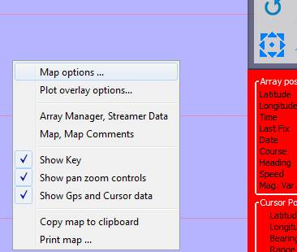

If the positions aren’t correct, or seem suspicious, then exit, re-load from your backup database, fix the CSV file, and try again.
OPTIONAL: Import ship tracks (GPS data)
Import of GPS data is only required if the GPS data are not already in the PAMGuard database (i.e. none of the data were originally collected with PAMGuard). GPS data of the ships track are required not only for viewing the track of the ship, but also to calibrate the compass of sonobuoys within the DIFAR module using noise from the vessel.
First add a GPS Processing module:
File -> Add Modules -> Maps and Mapping -> GPS Processing.

Next choose the menu option to Import GPS Data:
Settings -> GPS -> Import GPS Data ...

Select the file that contains the GPS data. Data can be in NMEA 0183 strings within a text file (personally tested and verified) or presumably in other common formats such as GPS, KML (but I haven’t actually tried these). Importing a days worth of GPS data from NMEA text (i.e. 86400 NMEA strings) may take some time.

The dialog above is a good indication that your GPS data are being imported, and also that there’s probably time for a cup of tea.
Validating GPS tracks
As with the sonobuoy deployments, ships tracks should be visible both on the Data Map, and the Map. Again, scrolling the time slider on the Map to see that the ships track and sonobuoy deployments line up provides a good reality check to ensure that the data are at least plausible.

Cleanup after import
The GPS Import can result in an MS Access database that has an excessive file size. This provides a good excuse to create a backup of the database now that the GPS track and Sonobuoy Deployment locations have been imported.
Close PAMGuard Viewer, open the database in MS Access, and save the database as a new MS Access database: e.g. difarTutorial-Imported.mdb.

Also, at this point it will be useful to make a backup of this file to use as a starting point for future post-processing sessions. It may be good to keep this backup in a place where it cannot be confused with the working copy (e.g. another folder) since a database file is modified each-time it is loaded into PAMGuard.
Acoustic Data Files
With sonobuoys and ships tracks imported and verified, it is finally time to make PAMGuard aware of the acoustic data. Again run PAMGuard in Viewer mode, loading the newly saved database: difarTutorial-Imported.mdb.

Add a Sound Acquisition module: File -> Add Modules ... -> Sound Processing ->Sound Acquisition

Sometimes Adding Modules may cause PAMGuard to appear unresponsive, however clicking on the small arrow on the Data Map will restore PAMGuard to a responsive state:

Now configure the Sound Acquisition: Settings -> Sound Acquisition ...

Sound acquisition is best handled if all of the acoustic files with DIFAR data are in a single folder, or a single set of subfolders. Files should have names that PAMGuard can interpret as a timestamp, e.g. code_YYYYMMDD_hhmmss.wav
· Where code is a text identifier for the voyage (e.g. ABWV)
· YYYY is the 4 digit year
· MM is the two digit month (with leading zero for months 1-9)
· DD is the two digit day of the month (with leading zero for days 1-9)
· hh is the two digit hour of the day (24 hour clock i.e. no AM/PM with leading zero for 00-09)
· mm is the two digit minute (with leading zeros)
· ss is the two digit seconds (with leading zeros)
DAQ Settings tab: Data Source Type: Audio file folder or multiple files
Click the button: Select Folder or Files, and navigate to the folder containing the DIFAR acoustic files.
Merge contiguous files should be checked, otherwise DIFAR data might be cleared from the queue and map for each new file that is processed.
The Peak-Peak voltage range is important for scaling the spectrogram and ensuring that received levels measured by the DIFAR module are somewhat representative of the actual received levels. If known, enter the Peak-Peak voltage range of the Analog/Digital converter that was used to digitise the files. For example: The Peak-Peak Voltage of the Fireface UFX recorder used for the 2013 Antarctic Blue Whale Voyage was 8.396 V for the “Instrument” input with the gain was set to 20 dB. Thus one could enter either of the following which should be equivalent:
Peak-Peak voltage range:8.396, Preamplifier gain:0 (tried and tested) or
Peak-Peak voltage range:83.96, Preamplifier gain:20 (untested; should be equivalent).
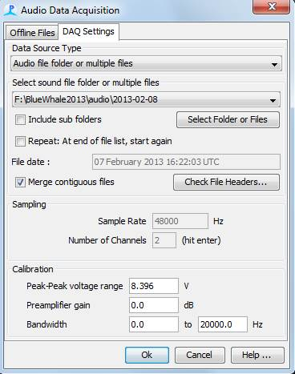
Under the Offline Files tab, make sure the box Use offline files is checked and once again select the folder containing the DIFAR acoustic files.

As with the sonobuoy deployments and ships tracks, these data should now be added to the Data Map under the Sound Acquisition.
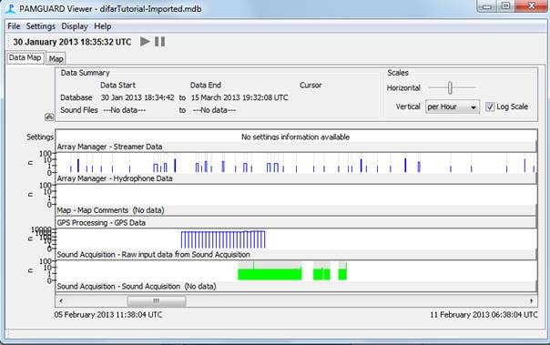
This concludes the preparation and import of metadata. It’s a good idea at this point to Save Data and Save Configuration (in the File menu). You can then close PAMGuard Viewer.
At this point it is wise to make a backup copy of your data/ existing PAMGuard databases before any post-processing, since post-processing may alter tables, rows, and columns of the PAMGuard database.
Preparation and Sound Processing
The DIFAR Localisation module depends on several core PAMGuard modules, thus it is sensible to ensure that these are correctly configured before spending any time adjusting DIFAR specific settings. For configuration of these modules, I typically run PAMGuard Mixed-Mode, though theoretically configuration can occur in Normal or Viewer modes as well.
When starting Mixed-Mode, load the database file that contains the sonobuoy deployments, ship track, and DIFAR audio data (i.e. the one created above).
Overview
Required PAMGuard modules
The following modules are required for processing of DIFAR data:
· Sound Acquisition: Already added and configured during Preparation and Import of Data
· Decimator: To reduce the sample rate of the data you’ll actually be looking at to a few kHz or less, depending on your target species.
· FFT (Spectrogram) Engine: To display a spectrogram of the Decimated data for manually marking detections, and also to be used as input to an automatic detector.
· User Display: The DIFAR display modules and spectrograms can all be integrated into a single display module. However, if you’ve multiple screens, you may wish to make multiple user displays and spread out a little.
· DIFAR Localisation: Contains the DIFAR specific components
Recommended Modules
The following modules are not required, but are highly recommended to facilitate analysis of DIFAR Localisations
· Additional FFT (Spectrogram) Engine processing raw data from the sound acquisition. The primary purpose of this FFT is to show the spectrum of the full signal which is a useful diagnostic to determine whether the DIFAR sonobuoy is functioning correctly. The spectrum of a correctly functioning DIFAR sonobuoy will show spectral peaks at the 7.5 and 15 kHz carrier frequencies. Absence of these peaks is a good indicator that something in the recording chain is amiss.
· Database: DIFAR results are written to the database, so you’ll need one if you want to store results.
· Binary store: Bearings, clips of audio that have been localised, and the processed DIFARGram are stored in the binary store, so like the Database, this module is useful for further analysis of localisations will be conducted.
· GPS Processing and Map modules: Already added and configured during Preparation and Import of Data.
· Whistle and moan detector: automated detection of whale sounds.
The figure below shows a typical PAMGuard model for DIFAR processing:
If you have followed the previous section of this tutorial (Preparation and Import of Data and Metadata) then the Sound Acquisition, Database, GPS Processing, and Map modules should already be present in your configuration, and will not need to be added, though the Map module will need almost certainly need to be reconfigured at a later time (e.g. after adding and configuring the DIFAR Localisation module).
Decimators
Omnidirectional decimator
There is typically 3 kHz of usable bandwidth on the omnidirectional hydrophone on a DIFAR sonobuoy, thus it is useful to include a Decimator when viewing the spectrogram of the omnidirectional hydrophone.
File -> Add Modules -> Sound Processing -> Decimator
Since there will be multiple Decimators, it is useful for each to have a descriptive name e.g. Downsample to 6 kHz.
Now configure the newly created decimator: Settings -> Downsample to 6 kHz
Input Data Source: Raw input from Sound Acquisition
Output sample rate: 6000

Click on the button to modify the Filter settings
The following parameters are recommended for this filter:
Filter Type: IIR Butterworth
Filter Response: Low Pass
Frequencies->Low Pass: 3000
Filter order: 4

Click Ok on all of the Decimator/filter dialog boxes in order to accept the newly configured parameters.
Low frequency decimator (for blue/fin whale calls)
In addition to creating a decimated data stream containing only the omnidirectional hydrophone, it may also be desirable to create a further decimated data stream for investigation of very low frequency calls from baleen whales (especially blue and fin).
File -> Add Modules -> Sound Processing -> Decimator
Since this is the second Decimator, it should also have a descriptive name e.g. Downsample to 250 Hz.
Now configure the newly created decimator: Settings -> Downsample to 250 Hz
Input Data Source: Downsample to 6 kHz
Output sample rate: 250

Click on the button to modify the Filter settings
The following parameters are recommended for this filter:
Filter Type: IIR Butterworth
Filter Response: Low Pass
Frequencies->Low Pass: 125
Filter order: 4

Click Ok on all of the Decimator/filter dialog boxes in order to accept the newly configured parameters.
You can check the flow of data through these Decimators by looking at the Data Model: File -> Show data model ...

FFT Engine
Low frequency spectrogram (for blue/fin whale calls)
Viewing and often detection of sounds of interest in PAMGuard typically requires a spectrogram. Here we will add a single spectrogram and use the acoustic data that has been downsampled to 250 Hz as the source of this spectrogram. Add the spectrogram engine:
File -> Add Modules ... -> Sound Processing -> FFT (Spectrogram) Engine
Like the Decimators, it is useful to give this FFT (Spectrogram) Engine a more descriptive name since there may ultimately be several of these modules. Since we will configure this FFT engine to use data from the 250 Hz decimator, it will be called Low Frequency FFT (Spectrogram) Engine. Now it needs to be configured. The settings below will yield ~1 Hz frequency bins and a time step of just over 100 ms, but with a lot of overlap between time slices.
Settings -> Low Frequency FFT (Spectrogram) Engine Settings ...
Raw data source for FFT: Downsample to 250 Hz data
FFT Length: 256
FFT Hop: 32
Window: Hann

NB: I find these settings useful for visually inspecting blue and fin whale song as well as FM non-song calls such as D calls of blue whales and other low frequency FM calls made by many other baleen whales. Using the Decimator to reduce the sample rate to 250 Hz before taking the FFT can help achieve the desired balance between time resolution and frequency resolution, and additionally it substantially reduces computational requirements (compared to those required for comparable time-frequency resolution on a signal sampled at 48 kHz). Of course feel free to use any settings that suit your application.
Full bandwidth spectrogram (for DIFAR diagnostics)
In addition to visualising the acoustic data from the omnidirectional hydrophone, viewing the full bandwidth spectrum (and spectrogram) can provide valuable diagnostic information regarding the VHF reception and correct function of the DIFAR recording chain. Add another spectrogram engine:
File -> Add Modules ... -> Sound Processing -> FFT (Spectrogram) Engine
Again this FFT (Spectrogram) Engine should have a descriptive name since there are now several of these FFT modules. Since we will configure this FFT engine to use data from the raw audio from the VHF receiver, it will be called Full Bandwidth FFT (Spectrogram) Engine. Now it needs to be configured. The exact settings for this are not critically important, as it will only be used for gross inspection the spectrum rather than detection of marine mammal sounds.
Settings -> Full Bandwidth FFT (Spectrogram) Engine Settings ...
Raw data source for FFT: Raw input data from Sound Acquisition
FFT Length: 2048
FFT Hop: 1024
Window: Hann
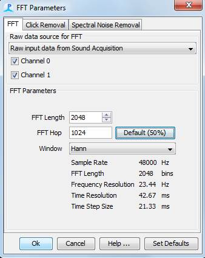
Additional FFT engines can be added as required; e.g. an FFT engine for the Omnidirectional decimator could be added to view mid-frequency baleen whale calls and low frequency odontocete whistles.
Again, you can check the flow of data through these Decimators by looking at the Data Model: File -> Show data model ...

User Displays
In addition to the FFT (Spectrogram) Engine, at least one User Display is required in order to actually visualise the output from the FFT Engine.
File -> Add Modules ... -> Displays -> User Display
Since we may eventually have several displays, each should be given a descriptive name. This will be the display that contains the DIFAR interface, so it should be named Difar Display.
A new tab with the named Difar Display should appear next to the Map. The new display is a blank canvas awaiting our configuration.
Display -> Difar Display -> Add Spectrogram
The new spectrogram will need to be configured.
Data Source
Source Data: FFT-256 point, 250.0 Hz-Low frequency FFT (Spectrogram)
Number of Panels: 2
Panel 0 channel: 0
Panel 1 channel: 1

Scales
Frequency Range
Min: 0
Max: 100
Amplitude Range
Min: 40
Max: 80
Colour model Fire (multicoloured)
Time Range
Window length (s): 120

Plug ins
Full Bandwidth FFT (Spectrogram) engine

Presently the Mark Observers tab is empty, but it is probably worth pointing out that we will need to revisit this tab again after we have added a DIFAR Localisation module. Ok.
A spectrogram display should now be visible in the Difar Display tab. NB: The Difar Display will appear in the Data Model, but will not appear to be connected to anything – this is no cause for concern: User Displays never appear connected to anything in the Data Model.
At this point it is wise to make a backup copy of your data/ existing PAMGuard databases before any post-processing, since post-processing may alter tables, rows, and columns of the PAMGuard database.
Before further configuration, it may be useful to run through the data while viewing the spectrogram in order to test that the spectrogram parameters are reasonable. Additionally, the Full Bandwidth FFT plug in will give a good indication of whether the data are suitable for further DIFAR processing.
Click the big red circle to run through the data in Mixed-Mode.
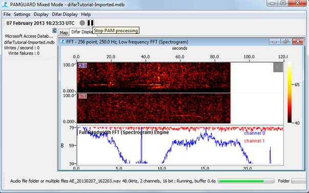In the screenshot above, we can see that the colour scaling in the spectrogram appears reasonable: Tonal calls of Antarctic blue whales are visible at ~26 Hz, more prominently on channel 0 than channel 1, but above the background noise on both channels.
The panel on the bottom shows the instantaneous spectrum (i.e. spectrum at the latest time slice). In the screenshot above, the spectrum for channel 0 (blue) shows the characteristic shape of that of a DIFAR sonobuoy with good VHF reception (i.e. strong omnidirectional signal from 0-3 kHz, carrier tones at 7.5 and 15 kHz, and directional signals modulated onto both sides of the 15 kHz carrier). The flat spectrum shown for channel 1 (red) indicates that DIFAR processing is unlikely to be successful or reliable, despite the presence of what appears to be a 26 Hz call of an Antarctic blue whale at approximately 60 s.
In this specific case, we know that the sonobuoy associated with channel 1 was simply too far away to give adequate VHF reception for further DIFAR processing, however the time of arrival difference between the calls can still provide a strong indication that the calling whale is closer to the sonobuoy on channel 0 than the one on channel 1 (assuming that the detections on each channel actually correspond to the same call). This type of process, i.e. thought experiment starting from first principles, serves as useful reality check whenever using DIFAR sonobuoys, regardless of whether they seem to be operating reliably or not.
If the colour contrast or time-frequency resolution of the spectrogram is not to your liking, adjust and re-run until they are fit for purpose.
At this point it is wise to make a backup copy of your data/ existing PAMGuard databases before any post-processing, since post-processing may alter tables, rows, and columns of the PAMGuard database.
Configuration of DIFAR Localisation
With sonobuoy deployments, ship tracks, DIFAR data, and sound processing modules all configured correctly, it is finally time to add the DIFAR Localisation module:
File -> Add Modules ...-> Localisers -> DIFAR Localisation
There will only be one DIFAR Localisation module, so the default name is acceptable.
By default the DIFAR localisation module attempts to use the Greeneridge Sciences Demultiplexer. If this demultiplexer has not been installed, a warning message will appear. This warning can safely be dismissed.
The DIFAR Localisation module has a considerable number of options. Many of the default options are perfectly acceptable, but many of the default options need to be modified for specific purposes. Here we will setup the DIFAR localisation module for processing Antarctic blue whale song and D calls.
Settings -> DIFAR Localisation settings
Data and buffers
The default settings on the data panel should be acceptable if using the AMMC_EXPERIMENTAL Demultiplexer.
Data Source: Raw input data from Sound Acquisition
Demultiplexer: AMMC_EXPERIMENTAL
Prepend to clip (s): 0
Time to keep Raw Data (s): 120
Queued Data Buffer (m): 60
Processed Data Buffer (m): 10
If using the Greeneridge Sciences Demultiplexer, change Prepend to clip (s): 3. The Prepend to clip setting is only required in order to allow the Greeneridge Demultiplexer to “Lock” onto the carrier signals before the sound of interest, and is not required by the AMMC demultiplexer.


Species (i.e. call classification)
We now need to add species/vocalisation-specific processing parameters under the Species tab. While the tab is called Species, it might actually be better named Call types, Vocalisations, or Classifications. This panel allows for the creation of different classifications for each call type, and each classification/call type can have its own parameters (e.g. sample rate, frequency band, angular resolution) for analysis of DIFAR localisations.
Click on the Edit Species List button, and add two call types to the Lookup Editor (Difar Localisation species list).
|
Code |
Text |
Selectable |
Symbol |
|
Abw |
Antarctic blue whale song |
checked |
Blue circle |
|
Bwd |
blue whale d call |
checked |
Green triangle |

The selected Line Colour of each symbol will be used for bearings to the species on the PAMGuard Map and Spectrogram, so selecting different line colours for each “Species” is a good idea. Click Ok, on the Lookup Editor to accept these two new “species.”
NB: There are a couple of bugs regarding the symbols in the Lookup Editor: I find that filled (i.e. solid coloured) symbols are not typically desired, however The Fill checkbox does not seem to influence the whether symbols are actually filled or not. Instead, the Transparency can be set to 100 under the HSV tab of the Fill Colour panel (as per the figure below). Like the Fill checkbox, the Line thickness setting does not appear to influence the actual thickness of the symbol or bearing lines.

Now we need to configure the DIFAR analysis parameters for each of the newly added “species.” From the Select Species drop-down menu choose abw; Antarctic blue whale song, and enter the following parameters:
Difar Calculation BARTLETT
Sample Rate.: 250
FFT Length (samples): 256
FFT Hop (samples): 32
Number of Angle Bins: 360
Intensity Scale: 100
Beamforming Frequency Max. (Hz): 30
Beamforming Frequency Min. (Hz): 25
Marked Clips: Beamforming (selected)
Auto Detections: Beamforming (selected)
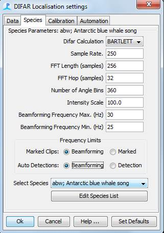
Again, from the Select Species drop-down menu choose bwd; blue whale d call, and enter the following parameters:
Difar Calculation BARTLETT
Sample Rate.: 250
FFT Length (samples): 128
FFT Hop (samples): 16
Number of Angle Bins: 360
Intensity Scale: 100
Beamforming Frequency Max. (Hz): 125
Beamforming Frequency Min. (Hz): 30
Marked Clips: Marked (selected)
Auto Detections: Detection (selected)

Additional “species”/call classifications can be added as required and configured in the same way as above.
OPTIONAL: Calibration
The calibration tab is only required if you wish to obtain compass correction/calibration using DIFAR bearings that originate from the ships track (i.e. the one that was imported as per above). In addition to knowing the ships location, characterisation of the ship noise (i.e. identification a frequency band where ship noise remains well above background levels) is also required. This frequency band should then be entered for the Beamforming Frequency Max/Min in the Calibration tab.
For the tutorial dataset the following Calibration settings are appropriate:
Difar Calculation BARTLETT
Sample Rate.: 2000
FFT Length (samples): 1024
FFT Hop (samples): 256
Number of Angle Bins: 360
Intensity Scale: 100
Beamforming Frequency Max. (Hz): 800
Beamforming Frequency Min. (Hz): 600
Clip Length (s): 10
Interval between clips (s): 10
Number of clips in sequence: 20
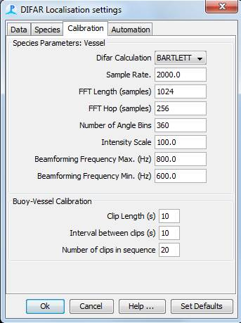
OPTIONAL: Automation
The Automation tab contains settings that should facilitate analysis of large numbers of detections.
Presently no automated detectors are configured, but this top panel will need to be revisited later after adding a Whistle and Moan Detector (as per the section below).
For convenience, 3 Quick classification “selectors” can be configured to appear next to audio clips in the DIFAR queue. Since we have only configured two “species”, we will leave the third Quick classification empty.
For new users of the DIFAR module, it is recommend not to Auto-save processed clips until you are familiar with operation of the module.

Configuring DIFAR Displays and Overlays
DIFAR processing is an interactive process with the computer doing the bulk of the work, but an operator making critical decisions such as validating detections, classifying sounds by species, and selecting/rejecting sounds for further processing and localisation.
The DIFAR module does not have its own tab panel. Instead the various displays you’ll need should be configured on the Difar Display panel.
Spectrogram Overlays and Manual Detections
The Low frequency FFT (Spectrogram) should have already been added to the Difar Display, but now that we have a DIFAR Localisation module we can configure the DIFAR specific overlays and functionality. Right-click on each channel of the spectrogram and ensure that both Queued DIFAR Data, and Processed DIFAR Data are checked. Remember overlays for Queued and Processed DIFAR Data must be enabled separately for each channel.

Additionally, if you plan to mark detections by hand on the spectrogram then it is important to enable the DIFAR Localisation module to function as a Mark Observer on the spectrogram. Right-click on either channel of the spectrogram, select Settings …; select the Mark Observers tab, and ensure that DIFAR Localisation is checked.

Map Overlays and Data Selectors
For single-monitor setups, you may also want to add an additional map to the DIFAR display. Speaking of maps, it is important to configure the Map Overlays for the DIFAR Localisation.
Right-click on the Map and select Plot overlay options …
Ensure that Plot and All are checked for both Array manager, Streamer Data as well as DIFAR Localisation, Processed DIFAR Data. Note that there are additional options available for the DIFAR Localisation, Processed DIFAR Data, and these can be accessed via the configuration button (i.e. the button with the gear icon). In future releases of the DIFAR Module the gear-icon will allow filtering of DIFAR bearings by species, amplitude, and tonal frequency.

NB: Map overlays must be configured for each map module, so if you added an extra Map to the Difar Display, you will need to perform these steps on both that Map, and the one that is in the separate Map tab.
In addition to the Map Overlays, there are also DIFAR Localisation display options… under the Display menu. The default values for these options are perfectly acceptable, and further documentation for these options are available in PAMGuard’s Help System.
DIFAR Displays
In addition to the spectrogram and map, a DIFAR Queue and a DIFAR Processing display are required to analyse DIFAR data.
Difar Display -> New DIFAR Localisation Queue
Difar Display -> New DIFAR Localisation Displays
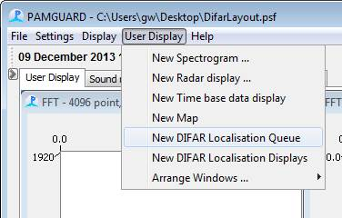
The DIFAR Localisation Display does not require any configuration, and further documentation can be found in PAMGuard’s online help system.
The DIFAR Localisation Queue will likely need to be modified from the default settings in order to tailor the presentation of audio to suit the target species. Click the small downward pointing arrow below the label Actions to expand the viewing options for queued clips. Clips selected for DIFAR Processing will appear in the queue as a spectrogram, and the sample rate for these clips is determined by the sample rate for the Default “species.”
Generally, the Min Amplitude should be adjusted to the same value that is used by the spectrogram: for the data from the 2013 ABW Voyage 40 dB works well. In my experience, DIFAR sonobuoys typically have a dynamic range of about 40-60 dB, so set the Amplitude Range to 40 dB. The FFT Length of the Queue will need to provide adequate frequency resolution at the sample rate of the Default species (which we set to 2000 Hz in the section above). The following settings are recommended for viewing clips of low-frequency sounds from blue and fin whales:
Min Amplitude: 40 dB
Amplitdue Range: 40 dB
FFT Length: 1024 pt
Scale
Horizontal: 8.00 x
Vertical: 0.25 x
Max Niquist X:0.10
Max Clips: 300
Max Minutes: 120
New Clips Last: (checked)
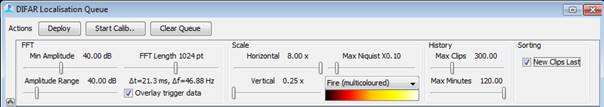
After configuration, the Queue settings panel can be hidden to make more room for clips by clicking the formerly downwards, but now upwards facing arrow on the far left of the panel.
Binary Storage
While the GPS, streamers, and other data are stored in the PAMGuard Database module, DIFAR Localisation should probably have a Binary Storage module as well.
File -> Add Modules … -> Utilities -> Binary Storage
File -> Storage options …
Make sure that both Binary Store and Database are checked for Processed DIFAR Data.
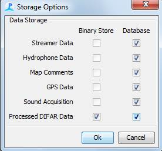
Additional configuration of the Binary Store is required:
File -> Binary Storage …
Select a location (i.e. folder) for the binary storage files using the Browse button, and if you are processing several days of data, it might be useful to Store data in sub folders by date.
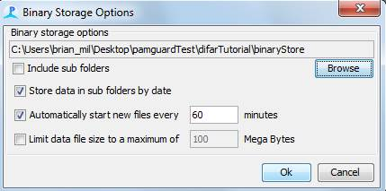
Remember that it might be a good idea to clean/move the Binary Store folder before each analysis session if you plan to re-analyse the same data multiple times.
Once you're happy with the configuration, I recommend saving yet another backup copy of the database since post-processing may alter tables, rows, and columns of the PAMGuard database, and potentially destroy all of the configuration and data.
Testing DIFAR Localisation
If you have followed the tutorial up to this point, you should now have a working DIFAR localisation system, and it is almost time to hit the big red button to run the recording in Mixed mode.
Controlling the speed of post-processing
However, unless you have Sound Output module enabled, post-processing will most likely run too fast to allow for manual marking of every sound of interest that you see on the spectrogram. However, the Sound Output can be used to control the overall speed of post-processing by adjusting the playback rate.
Settings -> Sound Output …
It is recommended that you not use the Raw input data from Sound Acquisition as the Data source. Rather, use either the Downsample to 6 kHz or Downsample to 250 Hz, as these will facilitate playback at a faster rate, and also have filtered the constant loud whistling of the 7.5 and 15 kHz DIFAR pilot tones. Make sure that at least one Channel is checked to enable the sound output. Also, make sure that the checkbox to Use default playback rate is unchecked. Though it may not be obvious, the post-processing speed will now be limited by the ratio of the sample rate of the Data source divided by the Playback rate. Thus, for the data source Downsample to 6 kHz a Playback rate of 48000 Hz will yield a post-processing speed of approximately eight times faster than real-time (provided that your computer has sufficient CPU processing ability to maintain that speed). Additionally, the “sped-up” audio will be played through the output device (i.e. speakers) with pitch shifted by the same ratio. For low frequency sounds from blue and fin whales, shifting the pitch this way can facilitate aural detection of calls that would ordinarily be too low in frequency to be audible to most people.
NB: You can adjust the Playback rate during post-processing in order to speed up long periods with little whale activity, or to slow down post-processing if there are many sounds of interest displayed on the spectrogram.
Post-processing initial run
Finally, click the red button to begin post-processing. Imported sonobuoys should automatically appear on the Map at the correct time/position with no need for you to hit the Deploy button or modify anything in the Array Manager in any way. The spectrogram should show low-frequency audio, or it may require adjustment of the Min and Max Amplitude Range under the Scales tab, or via the floating menu that can be expanded by the semi-transparent leftward pointing arrow in the upper right of the spectrogram display.

After ensuring that the audio in the spectrogram appears with adequate contrast, select a sound of interest by clicking and dragging on the spectrogram. As you click and drag, a box will appear around the sound of interest, and after you release the mouse, the sound will appear in the DIFAR Localisation Queue.
Right clip on the clip, then click on one of the classifications (or simply click on one of the Quick classifications to the right of the clip if you have configured these) to analyse the sound of interest. The sound will be sent to the DIFAR Localisation Displays. In this display, you can check that the signal was demodulated by right-clicking on the spectrogram and inspecting the Demuxed NS and Demuxed EW signals, which should appear as amplitude shifted copies of the Demuxed Omni signal. Then save the localisation if you are happy with it; the bearing should appear on your map.
As always, bearings to the ship are a great way to confirm that the DIFAR module is working as expected.
Once you're happy with the configuration, I recommend saving yet another backup copy of the database since post-processing may alter tables, rows, and columns of the PAMGuard database, and potentially destroy all of the configuration and data.
Remember that it might be a good idea to clean/move the Binary Store folder before each analysis session if you plan to re-analyse the same data multiple times.
Compass Calibration
At the time of writing, compass calibration in Mixed-mode requires a workaround since there are still unresolved issues between the Streamer Import and the Array Manager. This cause of this issue is somewhat understood and a solution is being investigated.
As stated before, DO NOT USE THE Deploy button or open the Array Manager when post-processing, or your sonobuoy deployments may be lost or disrupted.
To calibrate the compass of a sonobuoy when post-processing, wait until after the sonobuoy-to-be-calibrated appears on the Map, then click on the Start Calib.. button on the Actions bar of the DIFAR Queue Display. Proceed with the calibration as you would in Normal Mode (see Difar Localisation Calibration under the PAMGuard Help System). Once the Difar calibration window indicates Calibration complete click OK, and a new dialog window should ask if you wish to update the heading. WRITE DOWN the updated heading (either in a separate file or better yet in the correct column of the Streamer Import .csv file), and click Cancel. Clicking OK to accept the heading will likely cause that sonobuoy streamer to disappear. Cancel the Difar calibration window and exit PAMGuard.
Open the PAMGuard database in MS Access, and then open the HydrophoneStreamers Table. Locate the streamer that was calibrated, and enter the updated heading (i.e. the one you wrote down) into the column for heading. Save the database and now when you re-run PAMGuard in Mixed mode, the hydrophone will be now be calibrated.
As an alternative to editing the database using MS Access, you could enter the compass correction in the 12th column of the Streamer Import .csv, and then import the streamer/sonobuoy deployments with the updated heading into a new PAMGuard database.
Automated Detection and DIFAR processing
Using PAMGuard’s automated detectors via post-processing is identical to using them during Normal Mode, so consult the PAMGuard Help System -> DIFAR Localisation -> Configure DIFAR Processing -> Automation for further information.